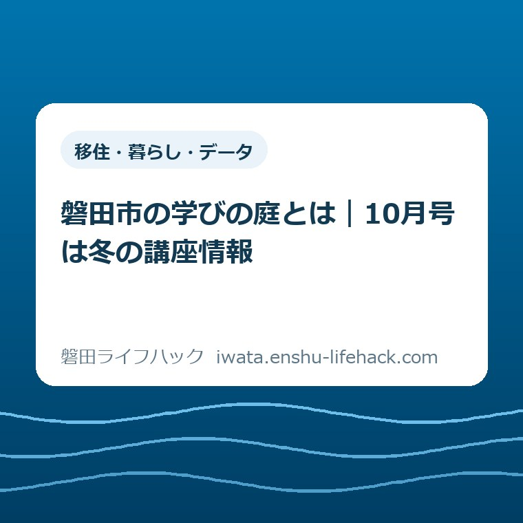

移住・暮らし・データ
磐田市の学びの庭とは｜10月号は冬の講座情報

この記事の要点
Q. 磐田市の「学びの庭」って何？ 10月号はいつの情報？
A. 磐田市の「学びの庭」は、スポーツや趣味、文化、芸術などの講座・イベント案内です。2026年10月号は11・12月の情報を掲載しています。発行月と開催月、申込期限は別に読み、対象者や費用は講座ごとの案内で確認します。今日は興味のある分野を一つ選び、最新情報は市公式ページで確かめてください。
情報を探すだけで、休日が終わってしまう前に
講座の対象者、費用、申し込み方法は個別に異なります。磐田市の「学びの庭」に載っているという理由だけで、誰でも同じ条件で参加できるとは判断できません。この記事は参加先を決める前の、案内の読み方を整理するものです。
引っ越した街で趣味を始めようとしても、施設名から調べるのは骨が折れます。住所を見て、地図を開き、開催日を家の予定と比べる。ようやく候補が見つかっても、申し込みが必要かをまた調べる。その手間は、参加する前から住む人が払っています。
私は大石浩之（磐田市／不動産業）です。暮らしの案内は、情報を並べただけでは使える形にならないと考えています。家の用事や仕事の合間に読む人が、どこまで分かれば今日は調べるのを終えてよいか。その区切りも一緒に示したいのです。
今回は、磐田市の学びの庭とは何かを入口から説明します。講座を一つずつ推薦する記事ではありません。2026年10月11日に市公式ページで確認した事実と、私が提案する探し方を分け、冬の予定を考えるための読み方に絞ります。
学びの庭とは、地域の講座を探すための案内
磐田市の「交流センター講座・イベント情報（学びの庭）」によると、学びの庭はスポーツ、趣味、文化、芸術などの講座・イベント・教室を紹介する案内です。施設の名前や一つの教室名としてではなく、学びの機会を探す情報の入口として読むと位置づけが分かります。
市公式ページの更新日は2026年10月1日です。掲載リンクには「令和8年10月号（令和8年11月12月情報）」とあります。令和8年は2026年。つまり10月号を開いて、11月・12月に参加する候補を探す作りです。号の名前と、紹介対象の月が違います。
10月号にはPDFとExcelのリンクが用意されています。紙版は2・4・6・8・10・12月の年6回発行予定です。「予定」という表現も含めて公式の案内であり、翌号が必ず何日に出るかまで決めつける材料にはなりません。
このページで分かるのは案内の役割と掲載号です。私は添付PDFの個別講座本文を確認できていません。そのため、本記事では具体的な講座名、日時、受講料、募集人数、空席を紹介しません。開催情報を調べるときは、リンク先の募集案内に戻る必要があります。

10月号を10月開催と読まない。日付は3つに分ける
学びの庭を読むときは、発行月、開催日、申込期限を分けて確認します。2026年10月号が11・12月情報を載せることは市の掲載名で確かめられますが、開催日と申込期限の関係までは号の名前だけでは分かりません。
発行月は「どの号の情報を見ているか」を示します。開催日は「その日に会場へ行けるか」を考えるための日付です。申込期限は「いつまでに意思を伝えるか」の区切りです。三つを一つの予定として覚えると、読む月と動く月を取り違えやすくなります。
例えば、冬の用事を調べるために10月号を保存するのは自然な使い方です。しかし、11月の講座だから11月に申し込めばよい、とは言えません。申込開始日や締切は個々の案内で読む項目です。ここで日付の例を作って、実際の募集条件のように紹介することも避けます。
家族に伝えるなら、「10月号に載る、11・12月の候補」と言葉を足すのが私の提案です。「10月の講座を見つけた」とだけ伝えるより、見ている資料と予定の月がずれません。スクリーンショットを送る場合も、号の名前だけでなく開催日欄が入る範囲を残します。
予定表へ移すときは、開催日と申込期限を別の欄に置きます。開催日の横には開始・終了時刻、期限の横には申込方法を書きます。案内に見当たらない項目は空欄のままにし、推測で埋めない。それだけで、家族が後から読んでも未確認の部分を見分けられます。
紙・PDF・Excelは、自分が読める入口を選ぶ
学びの庭の紙版は、交流センター、市役所本庁舎、各支所、各図書館等で配布すると市公式ページに案内されています。詳しい配布施設は同ページの添付一覧で確認できます。配布場所の案内は、訪問時の残部や開館状況を保証するものではありません。
私は、冊子だけを取りに遠回りする前に、普段の用事と重ねられる場所を考えるのがよいと思います。本を借りる日に配布場所を確かめるなら、磐田市の図書館6施設の使い分けが入口になります。施設の使い方と、当日の配布の有無は分けて確認してください。
支所の近くに用事がある人は、磐田市の4支所窓口でできることも参考になります。ただし、支所で冊子を手に取れることと、その窓口が講座の申し込みを受けることは同じではありません。冊子の入手先を、そのまま申込先と思い込まないようにします。
PDFとExcelのどちらを使うかは、開ける端末と読みやすさで選んでかまいません。両方が公開されているので、片方が読みづらければもう片方を試せます。本記事ではファイルのレイアウトや検索の動作までは確認していないため、どちらが必ず探しやすいとは断定しません。
端末の文字が小さく感じるなら、画面を拡大するか紙を選ぶ。ダウンロードした資料には号の名前を残す。古い保存ファイルを開いたときは、市の掲載ページと照合する。このように読む環境を整えてから探すほうが、細かな条件を見落とす心配を減らせると私は考えます。
近所の会場は、地区名だけで決めない
磐田市公式の「交流センター」ページには、市内23か所の施設が案内されています。交流センターは地域活動の支援、生涯学習の推進、部屋や設備の貸し出しを担う場所です。講座案内で知らない施設名が出てきたら、市の施設一覧から所在地を確かめられます。
例えば、見付交流センターは磐田市見付2385-10、中泉交流センターは磐田市中泉2404-1と掲載されています。これは会場の探し方を示すための例です。この2施設で10月号の特定講座が開催されるという意味ではありません。掲載会場と施設名を一致させてから場所を調べます。
引っ越したばかりの人にとって、聞き覚えのある地区名と、通える場所は必ずしも重なりません。私は地図上の直線距離だけで選ばず、家を出て帰るまでを予定に置いてみることを勧めます。送迎が必要なら、参加する本人の空き時間だけでは判断できないからです。
見る項目は、自分で使う移動手段、帰りの時刻、雨の日にも行けるかです。徒歩で行くつもりなら、荷物を持った帰りも考えます。車なら駐車場所を施設案内で確認します。公共交通なら使う便を調べます。どの移動手段も使えると想定して候補を広げる必要はありません。
体を動かしたいけれど教室の予定が合わない場合は、別の選択肢も持てます。磐田市ウォーキングマップで週末のコースを選ぶ記事では、自分の予定に合わせる入口を整理しています。講座への参加だけを、趣味を始める唯一の方法にしなくてよいのです。
良い点は、知らない分野にも入口があること
学びの庭の良い点は、分野をまたぐ案内と、紙・データの入口が用意されていることだと私は考えます。施設名も教室名もまだ知らない人が、自分の興味から探し始められる。磐田市で暮らし始めた人には、その入口自体に意味があります。
趣味の名前をはっきり言えなくても、「体を動かしたい」「何か作りたい」といった希望は持てます。私は最初から専門的な分類に自分を当てはめる必要はないと思います。案内の分野を眺め、気になった言葉を一つ拾うだけでも、次に何を調べるかが具体的になります。
紙の配布先が日常の公共施設にあることも、私は評価します。スマートフォンで調べる方法だけなら、端末の操作が調べ物の前提になります。手元の紙に印を付けたい人にも入口がある。自分が読める形を選べることは、情報の中身と同じくらい暮らしに効きます。
10月号に11・12月情報が載る構成も、私は先の予定を考える材料として受け止めます。開催する月になってから全てを探す以外の道があるからです。ただし、余裕を持って必ず申し込めるという保証ではありません。案内を早く知ることと、募集に間に合うことは別に判断します。
注文したい点は、初めて読む人の日付の迷い
学びの庭に注文したい点として、私は発行月と開催月の関係が、資料を単独で見ても伝わる案内を望みます。市の掲載リンクには対象月が明記されています。その良さを、家族への共有や保存の場面でも失わないことが、初めて使う人の助けになると考えます。
これは、紙面に説明がないという指摘ではありません。添付本文を確認できていないため、現在の誌面を評価することはできません。私が気にしているのは、リンク名の一部分だけを覚えたときに「10月号だから10月開催」と読み違える余地です。確認できた範囲を超えて不備を決めつけません。
もう一つ、私は情報量と探しやすさを分けて考えたいです。分野の入口が広いことには価値があります。一方で、初めての人は会場、対象、時間、費用を順に読み解きます。住民の側に残る確認の手間まで「情報が載っている」で片付けてしまうと、使い始める負担が見えなくなります。
だから本記事では、読者が自分で使える小さな整理方法を添えます。案内全体を読破する課題にはしません。気になった分野だけを見て、その中の候補について条件を確認する。市の案内を代わりに要約し尽くすより、公式情報へ戻れる道を短く示すことが私の役割だと思います。
対案・結論——今日は興味のある分野を一つ選ぶ
今日できる一歩は、学びの庭で探したい分野を一つだけ決めることです。スポーツ、趣味、文化、芸術のうち、気になる入口を選びます。講座名を決めることも、申し込みを終えることも、今日の到達点にしなくてかまいません。
例えば「外へ出る機会がほしい」と思うなら、その希望を自分の言葉で一行残します。「作品を作ってみたい」「地域のことを知りたい」でもよい。その言葉を持って案内を見ると、周囲が勧める講座ではなく、自分がなぜ興味を持ったかを確かめながら候補を探せます。
候補が見つかった後の確認用には、下の順番を使えます。これは市が定める申込手順ではなく、私の整理案です。募集案内の条件が分からない段階で、自分は対象だろう、無料だろう、当日行けばよいだろうと補わないためのものです。
- 掲載号と、気になった講座名を一緒に記録する。
- 対象者・開催日・会場を読み、自分の条件と照合する。
- 費用・持ち物・申込方法・期限・問い合わせ先を募集案内で確かめる。
費用を見るときは、受講料という一つの欄だけで判断せず、材料費や持ち物の記載があるかも読みます。追加費用が必ずあるという意味ではありません。参加のために何を準備するかまで分かってから、家計と時間の予定に入れるための確認です。

大石の視点——探す手間も、暮らしの負担です
私は、講座の価値を内容だけでなく、参加するまでの段取りと一緒に考えます。調べる時間も、家族と予定を合わせる時間も、生活の中から出ています。情報を探すだけで疲れてしまうなら、案内が存在することと、使えることの間にはまだ距離があります。
正直に言えば、私は入口をどこまで絞るべきか迷います。近い会場だけを示せば、通う判断はしやすくなります。しかし、まだ知らない分野に出会う可能性は狭くなる。全てを一覧にすれば解決する、とも思えません。選択肢の広さと、読む人の持ち時間は両方見たいのです。
その迷いがあるから、私は「まず分野を一つ、会場はその後」という順番を提案します。家を探すときと同じで、条件を全部並べる前に、今回何を満たしたいのかを決める。これは相談の実話ではなく、私の考えです。興味の入口が定まれば、条件を確かめる作業にも目的ができます。
案内を全部読んだことを、今日の成果にしなくてよい。私はそう言い切ります。市民が払う手間を減らすなら、情報を増やすだけでなく、調べる範囲を決められる言葉が必要です。今日は分野を一つ選ぶ。それを、磐田で自分の楽しみを探す最初の作業にしてよいと思います。
よくある質問
学びの庭を初めて使うときの疑問を、概要、掲載月、入手方法に分けて整理します。以下は2026年10月11日に確認した市公式ページの掲載内容に基づきます。個別講座の募集条件は、必ずそれぞれの案内で確認してください。
磐田市の学びの庭とは何ですか？
磐田市が案内する、スポーツや趣味、文化、芸術などの講座・イベント・教室の情報です。一つの教室の名前ではなく、地域の学びを探す入口として利用できます。対象者、費用、申込方法は講座ごとに異なります。気になる分野を選んだ後は、個別の募集案内で自分が参加できる条件を確かめてください。
2026年10月号には10月の講座が載っていますか？
市公式ページの掲載名は「令和8年10月号（令和8年11月12月情報）」です。2026年10月号は11・12月の情報を探す号として案内されています。号の月を開催月や申込期限と同一視しないでください。個々の開催日と締切は本記事では未確認のため、それぞれの講座案内で確認が必要です。
学びの庭はどこで読めますか？
市公式ページに2026年10月号のPDFとExcelが掲載されています。紙版は交流センター、市役所本庁舎、各支所、各図書館等で配布する案内です。詳しい施設は公式ページの配布施設一覧で確認できます。紙の残部や訪問日の開館状況は別に確かめ、申し込みは冊子の配布窓口ではなく講座の案内に従ってください。
制度や施設の利用条件、講座の募集内容は変更される場合があります。個別の参加可否は掲載された問い合わせ先で確かめてください。最後は磐田市公式の「交流センター講座・イベント情報（学びの庭）」で、閲覧する号と最新の案内をご確認ください。
参考にした公式情報
- 交流センター講座・イベント情報（学びの庭）／磐田市（更新日2026年10月1日、2026年10月11日確認）
- 交流センター／磐田市（更新日2025年12月12日、2026年10月11日確認）
最終確認日：2026-10-11。公表情報と執筆者の意見を分けています。制度・数値・募集内容は変更される場合があります。最新情報は磐田市公式ページで、個別の参加条件は募集案内の問い合わせ先で確認してください。